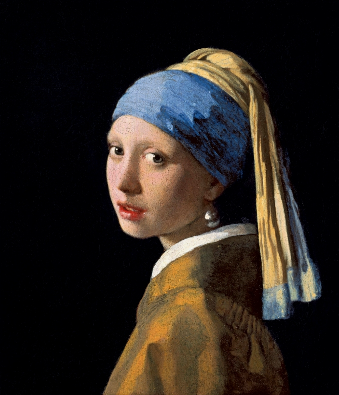
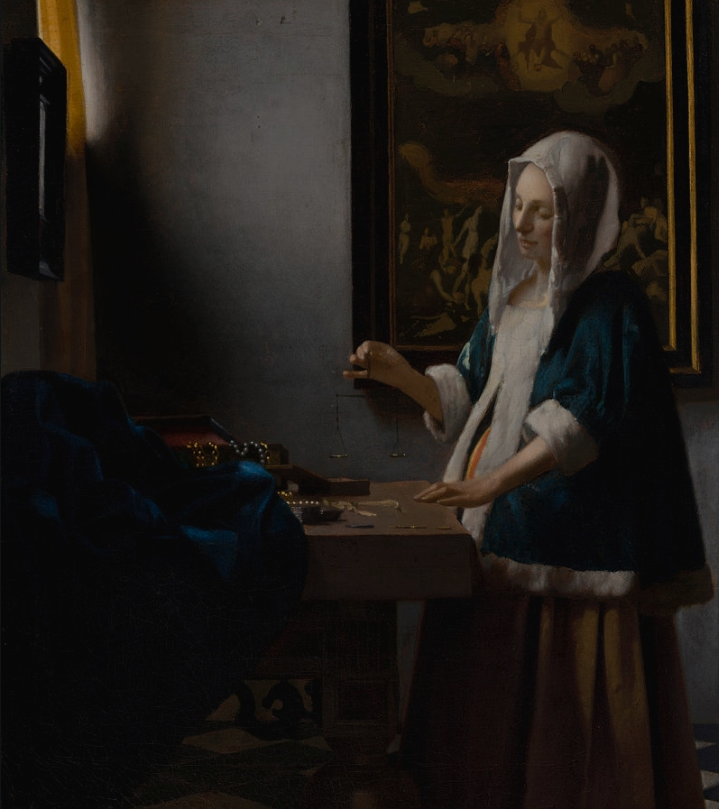
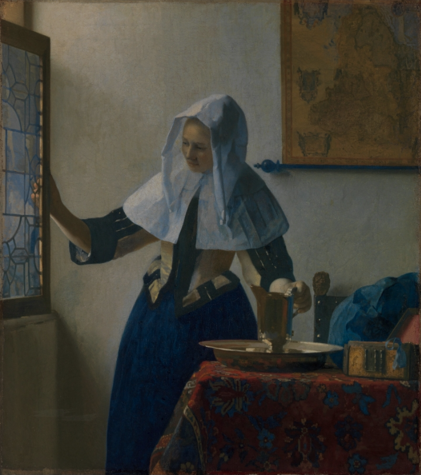
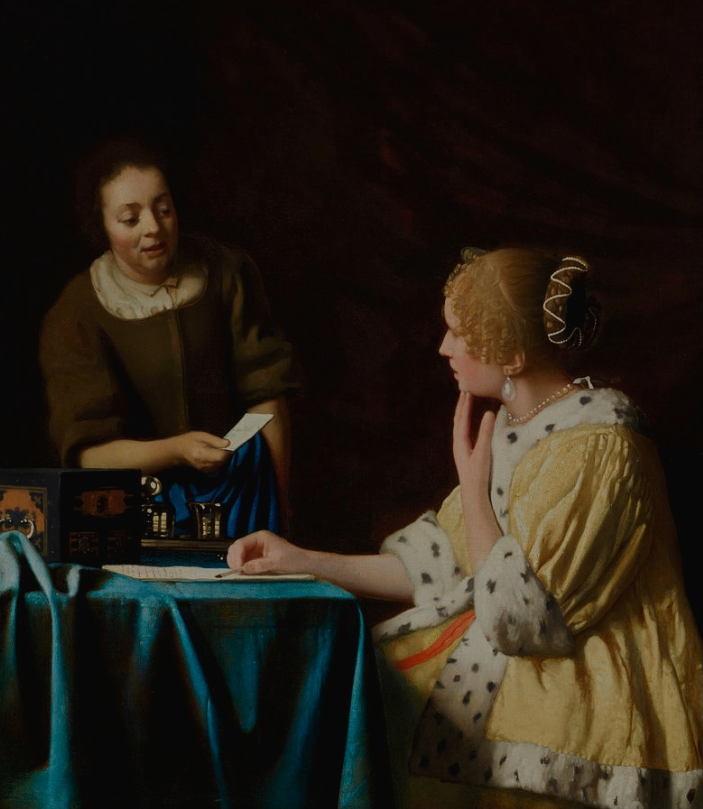
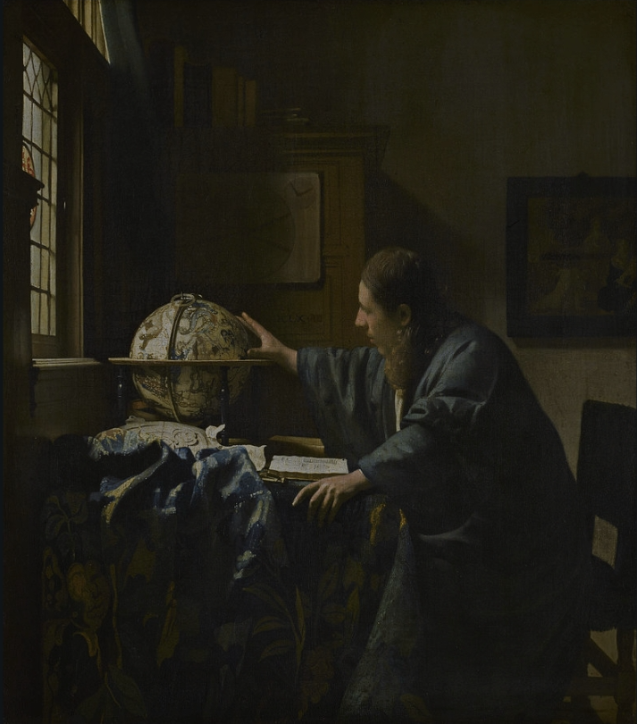

Ulises Lizardo Lopez Herrera | Carnet: 0900 - 26 - 53


6. Johannes Vermeer (1632 – 1675)
Estilo y Movimiento: Barroco Holandés / Realismo de la Luz.
A primera vista, el maestro de Delft parece un intruso en un entorno de sombras, pero el misterio de Vermeer radica en el silencio. Su estilo destaca por un uso científico y poético de la luz, una perspectiva geométrica perfecta y la captura de momentos domésticos suspendidos en el tiempo. Sin embargo, detrás de la aparente calma de sus personajes existe una tensión invisible, un abismo de secretos no revelados y una quietud psicológica que congela el alma del espectador.
¿Por qué está en El Abismo?: Nos recuerda que el abismo no siempre ruge; a veces es un susurro en una habitación iluminada. La melancolía silenciosa y la soledad contenida en sus composiciones aportan una dimensión de misterio y pulcritud matemática indispensable para nuestra curaduría.





"Y conoceréis la verdad y la verdad os hará libres"